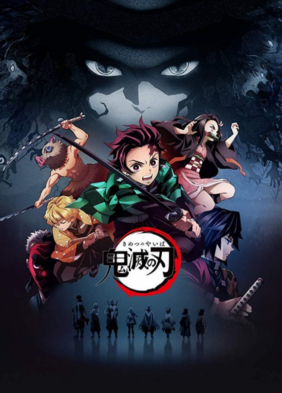
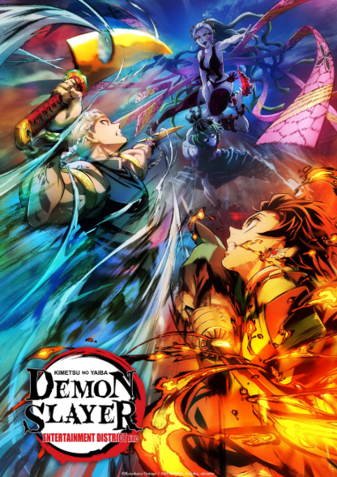
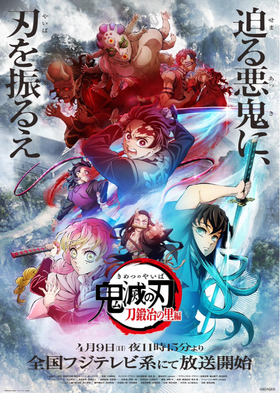
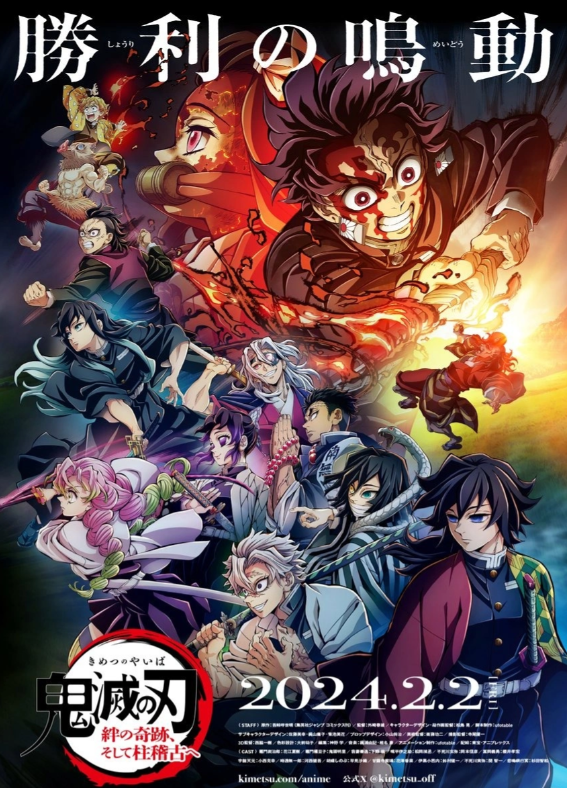

Temporadas e Filmes
Confira as temporadas, arcos e filmes de Demon Slayer:
Kimetsu no Yaiba
Temporada 1

26 episódios
A primeira temporada apresenta Tanjiro Kamado, sua irmã Nezuko e sua jornada para se tornar um
caçador de
demônios.
Demon Slayer: Mugen train
Filme
O filme acompanha Tanjiro, Nezuko, Zenitsu e Inosuke durante
uma missão no Trem Infinito, ao lado do Hashira das Chamas,
Kyojuro Rengoku.
Temporada 2

Mugen Train Arc
7 episódios
Entertainment District Arc
11 episódios
A segunda temporada continua a jornada de Tanjiro e seus
companheiros, apresentando novas missões e novos inimigos.
Temporada 3 - Swordsmith Village Arc

11 episódios
Tanjiro viaja até a Vila dos Ferreiros para procurar uma nova
espada e acaba enfrentando novos inimigos ao lado de outros
caçadores de demônios.
Temporada 4 - Hashira Training Arc

8 episódios
Tanjiro e outros caçadores passam por um treinamento especial
conduzido pelos Hashira antes do confronto final contra os
demônios.
Onde assistir


A disponibilidade pode variar de acordo com a plataforma e a região.
© Projeto acadêmico - Demon Slayer